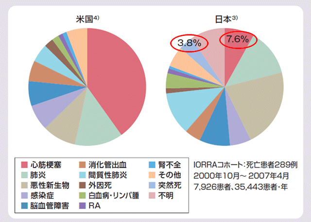

日本人RA患者においてもCVDが死因の割合は少ないとは言えない

IORRAコホートにおける日本人RA患者の死因の解析では心筋梗塞は7.6%であった。
RA患者のCVDには突然死が多いという特徴があり、上図の突然死の中にRAによる死亡が含まれている可能性を考慮した場合、実際には心筋梗塞による死亡割合はより大きいと考える事ができる。

日本においてもCVリスクを考慮したRA治療を行うべき時期にきている
IORRAコホートにおける日本人RA患者の死因の解析では心筋梗塞は7.6%であった。
RA患者のCVDには突然死が多いという特徴があり、上図の突然死の中にRAによる死亡が含まれている可能性を考慮した場合、実際には心筋梗塞による死亡割合はより大きいと考える事ができる。
日本においてもCVリスクを考慮したRA治療を行うべき時期にきている